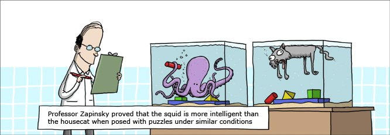
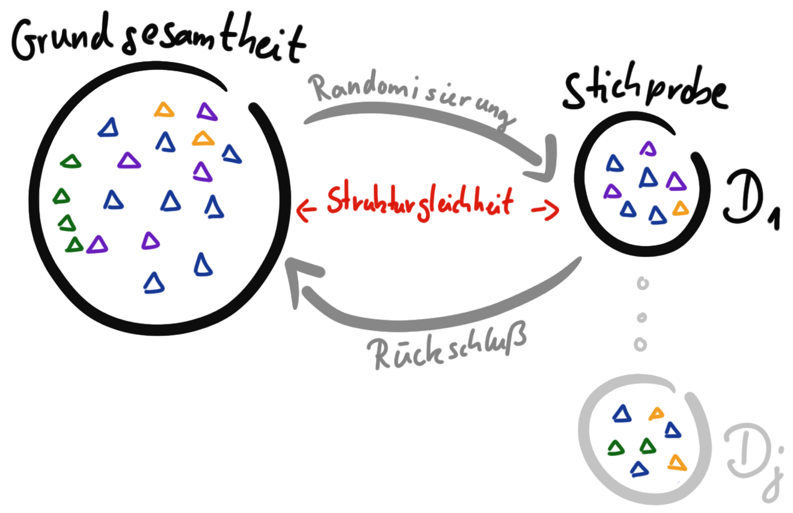

3 Forschungsprozess
Version vom June 23, 2023 um 19:26:29
“Die Wissenschaft fängt eigentlich erst da an interessant zu werden, wo sie aufhört.” — Justus von Liebig

Wenn du forsche willst, musst du das was dich umgibt hinterfragen. Beginnen wir also mit einer kleinen Parabel von Wallace (2009) über das Wasser.
Da schwimmen zwei junge Fische und treffen zufällig einen älteren Fisch, der in die andere Richtung schwimmt, ihnen zunickt und sagt: “Morgen, Jungs. Wie ist das Wasser?” Und die beiden jungen Fische schwimmen eine Weile weiter, bis schließlich einer von ihnen zu dem anderen hinüberschaut und sagt: “Was zum Teufel ist Wasser?”
Okay, nette Geschichte über Fische, aber was denn nun mit wissenschaftlicher Forschung zu tun? Keine Angst, wir kommen nochmal auf die Geschichte mit dem Wasser zurück. Aber zuerst die Frage nach dem Woher kommen wir eigentlich und wohin wollen wir? Das sind die Fragen, die wir in diesem Einführungskapitel zu dem Prozess der Forschung angehen wollen. Für viele Anfänger ist das wissenschaftliche Arbeiten immer etwas sperrig oder gar mysteriös. Irgendwie passt das wissenschaftliche Arbeiten nicht so richtig in die Alltagserfahrungen hinein. Oder etwas plakativer, wissenschaftliches Arbeiten soll und muss sich vom gesunden Menschenverstand unterscheiden.
Wissenschaftliches Arbeiten ist eine eigne Art zu Denken und somit auch eine wissenschaftliche Philosophie. Häufig ist dir gar nicht bewusst, dass es verschiedene Denkschulen und Denkansätze gibt. Mit Philosophen verbinden wir häufig die alten Griechen, die auf Plätzen, umrahmt von Marmorsäulen, einen Plausch abhalten. Oder aber wir haben das Bild von dem Philosophen Diogenes in dem Weinfaß vor Augen, was auch den Philosophen eher gering schätzt. Diogenes kommt als versoffener Obdachloser rüber, dem wir dann auch nicht zuhören müssen. auch wenn er uns unbequeme Dinge sagt. Wir wollen uns also im folgenden Kapitel auf ein Abenteuer begeben und sehen ein Abenteuer, als eine Unternehmung bei dem der Ausgang ungewiss ist.
3.1 Zurück in die Zukunft
“So. Zeitleitung einschalten. Flux Kompensator - fluxuriert. Maschine läuft. Es kann los gehen.” — George McFly in Zurück in die Zukunft
Wo wollen wir eigentlich hin, wenn wir einmal den ganz großen Bogen spannen? Die Lehre soll sich ja immer in die Zukunft (eng. future) richten und Wissen von einer Generation zu der nächsten Transferieren. Wir haben ja immer nur eine begrenzte Zeit zu Verfügung in der ich dir Fähigkeiten (eng. skills) vermitteln kann. Nun ist die Frage, was soll ich eigentlich unterrichten und was wird in der Zukunft den nun gebraucht? Beginnen wir erstmal mit der klassischen 7G-Lehre, die du bis jetzt immer erlebt hast.
Die Pyramiden von Gizeh entstanden etwa von 2620 bis 2500 v. Chr. und waren bis zur Errichtung des Eifelturms im Jahre 1889 n. Chr. das höchste, von Menschen erschaffene, Gebäude.
3.1.1 Klassischer 7G-Unterricht
Was ist eigentliche die klassische Lehr- und Lernerfahrung aus der Schule? Denn aus der Schule kommst du an die Hochschule und bringst für dich die Norm für deine Lehr- und Lernerfahrung mit. Deshalb hier einmal etwas mit Abstand auseinander genommen was klassischer Unterricht ist und warum dieser klassische Unterricht nach Helmke (2013) auch 7G-Unterricht genannt wird.
- gleiches Alter
- gleicher Ort
- gleiche Zeit
- gleiche Art und Weise
- gleiches Lehrperson
- gleiche Inhalte
- gleiche Lernziele
Im klassischen 7G-Unterricht bearbeiten gleichaltrige Schüler:innen im gleichen Raum zur gleichen Zeit auf die gleiche Art und Weise mit der gleichen Lehrperson die gleichen Inhalte – und orientieren sich dabei an den gleichen Zielen. Wir sehen also, es ist ein starker Fokus auf das Gleiche für jeden.
Darüber hinaus haben wir in der Schule einen Fokus auf das Ergebnis und nicht den Prozess. Du bist darauf trainiert, bei einem ersten Versuch besser als der Durchschnitt zu sein und zu vergessen, was du getan hast, sobald du deine Klausur geschrieben hast. Es geht also primär um die Note am Ende und um möglichst effizient eien gute Note zu erreichen. César A. Hidalgo schrieb zum diesem antrainierten Verhalten in der Schule und dem Spannungsfeld der späteren Arbeit einen längeren Faden auf Twitter mit folgenden Eingangstweet.
Nachdem ich über ein Jahrzehnt lang Doktoranden und Masterstudierende beraten habe, stelle ich fest, dass die meisten Studierenden eine Sache erst einmal ablegen müssen: die Mentalität der Halbherzigkeit, die sie sich durch jahrelange Tests und Hausaufgaben angeeignet haben.
3.1.2 Future Skills
“Prognosen sind schwierig, vor allem, wenn sie die Zukunft betreffen.” — Mark Twain
Waas sind den nun die zukünftig notwendigen Fähigkeiten (eng. Future Skills)? Hierzu nutzen wir als die direkte Quelle den Stifterverband-Initiative “Future Skills”. Dort finden wir dann auch die Future Skills: Die Skills im Überblick.
| Kompetenzen | Inhalte |
|---|---|
| Technologische Kompetenzen | Data Analytics & KI, Softwareentwicklung, Nutzerzentriertes Design, IT-Architektur, Hardware/Robotikentwicklung, Quantencomputing |
| Digitale Schlüsselkompetenzen | Digital Literacy, Digital Ethics, Digitale Kollaboration, Digital Learning, Agiles Arbeiten |
| Klassische Kompetenzen | Lösungsfähigkeit, Kreativität, Unternehmerisches Handeln & Eigeninitiative, Interkulturelle Kommunikation, Resilienz |
| Transformative Kompetenzen | Urteilsfähigkeit, Innovationskompetenz, Missionsorientierung, Veränderungskompetenz, Dialog- und Konfliktfähigkeit |
3.2 Beispielhafte Denkschulen
- Karl Popper
- Determinismus
- Weltbild (Heliozentrisch) -> Newton -> Einstein (wie information weitergeleitet Erde Mond)
- Humboldtsches Bildungsideal
- Falsifikationprinzip
- Frequentistischer Wahrscheinlichkeitsbegriff
- Bayessche Wahrscheinlichkeitsbegriff
- Qualitative / Quantitative Forschung
- Mark Aurel https://de.wikipedia.org/wiki/Mark_Aurel
- Freud Adler
- Erich Fromm und Die Kunst des Liebes
- Logik mit Deuktion und Induktion
- Why the pen its mightiger than the keyboard Mueller und Oppenheimer (2014)
- Real World Data Liu und Panagiotakos (2022)
- Warum Data Science Hariri, Fredericks, und Bowers (2019)
- Freiheitsbegriff: This is waterWallace (2009)
- Freiheitsbegriff: Kishimi und Koga (2018)
- Cargo Cult Science Feynman (1998)
- Eigene Sachen Kruppa u. a. (2021)
- Bias (Survival Bias)
Warum eigentlich Prozess? Geht es nicht eigentlich um das Ergebnis? Also wollen wir nicht was Neues entdecken?
Kapitalistische Idee des Gefühles des Mangels als Triebfeder für den Konsum und das Wirtschaftssystem.
| Art der Kränkung | Quelle | Beschreibung |
|---|---|---|
| kosmologisch | Kopernikus (1543) | Die Erde und damit auch der Mensch ist nicht Mittelpunkt der Welt. |
| biologisch | Darwin (1859) | Die Menschheit ist in das Entwicklungssystem der Organismen eingegliedert. |
| psychologisch | Freud (1895) | Der Mensch ist noch nicht Herr der eigenen Handlungen, sondern wird (vermutlich) vom Unbewussten gelenkt. |
| ethologisch | Heinroth 1910 | Nicht nur unser Körperbau, sondern auch unser Verhalten ist aus dem Tierreich hervorgegangen. |
“Ein Schiff ist im Hafen sicher, doch dafür werden Schiffe nicht gebaut.” — John Augustus Shedd
“The first principle is that you must not fool yourself and you are the easiest person to fool.” — Richard P. Feynman
“You have to be creative to do science. Otherwise you’re just repeating tired old formulas. You arent’t doing anything new.” — Steven Hawking
“Du lebst nicht um die Erwartungen anderer Menschen zu erfüllen” — Kishimi und Koga (2018)
“Wir müssen also den gegenwärtigen Zustand des Universums als Folge eines früheren Zustandes ansehen und als Ursache des Zustandes, der danach kommt. Eine Intelligenz, die in einem gegebenen Augenblick alle Kräfte kennt, mit denen die Welt begabt ist, und die gegenwärtige Lage der Gebilde, die sie zusammensetzen, und die überdies umfassend genug wäre, diese Kenntnisse der Analyse zu unterwerfen, würde in der gleichen Formel die Bewegungen der größten Himmelskörper und die des leichtesten Atoms einbegreifen. Nichts wäre für sie ungewiss, Zukunft und Vergangenheit lägen klar vor ihren Augen.” — Pierre-Simon Laplace
“Gott würfelt nicht!” — Albert Einstein
“In der Wissenschaft beginnt alles Neue damit, dass jemand brummt ‘Hmmm… ist ja komisch.’” — Isaac Asimov
“Ich werde dir ein Geheimnis verraten. Etwas, das sie dir in deinem Tempel nicht beibringen: die Götter sind neidisch auf uns. Sie beneiden uns, weil wir sterblich sind, weil jeder Augenblick unser letzter sein kann. Alles ist schöner, weil wir dem Tode geweiht sind. Du wirst nie schöner sein, als du jetzt bist. Wir werden nie wieder hier sein.” — Achilles, Troja
https://de.wikipedia.org/wiki/Laplacescher_D%C3%A4mon
“Wenn dich etwas Äußeres bedrückt, so liegt der Schmerz nicht an der Sache selbst, sondern an deiner Einschätzung derselben; und diese kannst du jederzeit widerrufen.” — Marcus Aurelius
“It is not the strongest of the species that survives, nor the most intelligent that survives. It is the one that is most adaptable to change.” — Leon C. Megginson Charles Darwin zugeschrieben



3.3 Falsifikationsprinzip
“Soweit eine wissenschaftliche Aussage über die Realität spricht, muss sie falsifizierbar sein; und soweit sie nicht falsifizierbar ist, spricht sie nicht über die Realität.” — Karl Popper
Du findest auf YouTube Grundlagen der Wissenschaft und Falsifikationsprinzip als Video Reihe.
Wie funktioniert ein statistischer Versuch? Ich könnte auch wissenschaftliches Experiment schreiben, aber ein wissenschaftliches Experiment ist sehr abstrakt. Wir wollen ja einen Versuch durchführen und danach - ja was eigentlich? Was wollen wir nach dem Versuch haben? Meistens eine neue Erkenntnis. Um diese Erkenntnis zu validieren oder aber abzusichern nutzen wir Statistik. Dazu musst du noch wissen, dass wir eine spezielle Form der Statistik nutzen: die frequentistische Statistik.
Die frequentistische Statistik basiert - wie der Name andeutet - auf Wiederholungen in einem Versuch. Daher der Name frequentistisch. Also eine Frequenz von Beobachtungen. Ist ein wenig gewollt, aber daran gewöhnen wir uns schon mal. Konkret, ein Experiment welches wir frequentistisch Auswerten wollen besteht immer aus biologischen Wiederholungen. Wir müssen also ein Experiment planen in dem wir wiederholt ein Outcome an vielen Tieren, Pflanzen oder Menschen messen. Auf das Outcome gehen wir noch später ein. Im Weiteren konzentrieren wir uns hier auf die parametrische Statistik. Die parametrische Statistik beschäftigt sich mit Parametern von Verteilungen.
- Wir müssen auf jeden Fall wiederholt ein Outcome an verschiedenen Tieren, Pflanzen oder Menschen messen.
- Wir überlegen uns aus welcher Verteilungsfamilie unser Outcome stammt, damit wir dann die entsprechende Verfahren zur Analyse nehmen können.
Wenn wir nun ein Experiment durchführen dann erheben wir einmalig Daten \(D_1\). Wir könnten das Experiment wiederholen und erneut Daten \(D_2\) erheben. Wir können das Experiment \(j\)-mal wiederholen und haben dann Daten von \(D_1,..., D_j\). Dennoch werden wir nie alle Daten erheben können, die mit einem Experiment verbunden sind.
Nehmen wir das Beispiel, dass wir die Sprungweite von Hunde- und Katzenflöhen vergleichen wollen. Wir können nicht alle Hunde- und Katzenflöhe messen. Wir können nur eine Stichprobe an Daten \(D_1\) erheben. Über diese Daten \(D_1\) können wir dann später durch statistische Algorithmen eine Aussage treffen. Wichtig ist hier sich zu merken, dass wir eine Grundgesamtheit haben aus der wir eine Stichprobe ziehen. Wir müssen darauf achten, dass die Stichprobe repräsentativ ist und damit strukturgleich zur Grundgesamtheit ist. Die Strukturgleichkeit erreichen wir durch Randomisierung. Wir veranschaulichen diesen Zusammenhang in Abbildung 3.6. Ein Rückschluß von der Stichprobe ist nur möglich, wenn die Stichprobe die Grundgesamtheit repräsentiert. Auch eine Randomisierung mag dieses Ziel nicht immer erreichen. Im Beispiel der Hundeflöhe könnte wir eine Art an Flöhen übersehen und diese Flohart nicht mit in die Stichprobe aufnehmen. Ein Rückschluß auf diese Flohart wäre dann mit unserem Experiment nicht möglich.

Tabelle 3.3 zeigt nochmal die Zusammenfassung von der Grundgesamtheit un der Stichprobe im Vergleich. Wichtig ist zu merken, dass wir mit unserem kleinen Experiment Daten \(D\) generieren mit denen wir einen Rückschluß und somit eine Verallgemeinerung erreichen wollen.
| Grundgesamtheit | Stichprobe |
|---|---|
| … \(n\) ist riesig bis unfassbar. | … \(n_1\) von \(D_1\) ist klein. |
| … der Mittelwert wird mit \(\mu_y\) beschrieben. | … der Mittelwert wird mit \(\bar{y}\) beschrieben. |
| … die Varianz wird mit \(\sigma^2\) beschrieben. | … die Varianz wird mit \(s^2\) beschrieben. |
| … die Standardabweichung wird mit \(\sigma\) beschrieben. | … die Standardabweichung wird mit \(s\) beschrieben. |